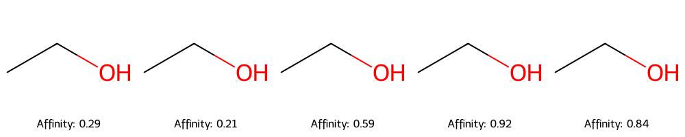
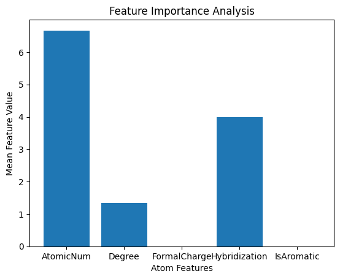

Drug Discovery (Molecular Binding Affinity Prediction)
Project Overview
This project implements a Graph Neural Network (GNN) to predict molecular binding affinities, a crucial task in drug discovery. The solution combines cheminformatics (RDKit) with deep learning (PyTorch Geometric) to analyze molecular graphs.
Key Features
- 🧪 Synthetic data generation for molecular structures
- 🖼️ Molecular graph visualization and feature analysis
- 🧠 GNN model with 2-layer graph convolution architecture
- 📊 Hyperparameter tuning with grid search
- 🔍 Feature importance analysis for molecular properties
Methodology
Molecular Graph

Architecture
GNN(
(conv1): GCNConv(5, 64)
(conv2): GCNConv(64, 64)
(fc): Linear(in_features=64, out_features=1)
)
Results
Model Performance
📉 MSE: 0.0848
🏋️ Training Epochs: 1000
💻 Hidden Channels: 64
Hyperparameter Tuning
Best Parameters:
- Hidden Channels: 128
- Learning Rate: 0.001
Achieved MSE: 0.0762

Conclusion/Future Work
The GNN model demonstrates promising results in predicting binding affinities, achieving an MSE of 0.0848. Future work includes:
- Integration of 3D molecular information
- Implementation of attention mechanisms
- Validation with real-world experimental data
About
- For a detailed look at the full project and its source code, please visit the GitHub repository.
- I welcome professional connections and discussions about this project or related topics. Feel free to connect with me on LinkedIn.
- To learn more about my other projects and professional background, you can visit my personal website.